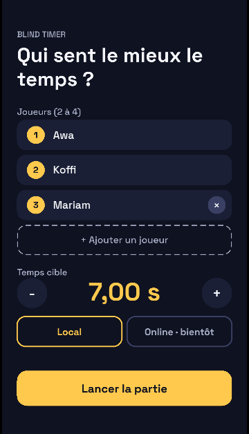
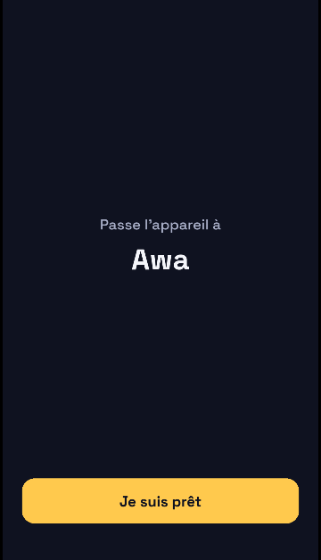
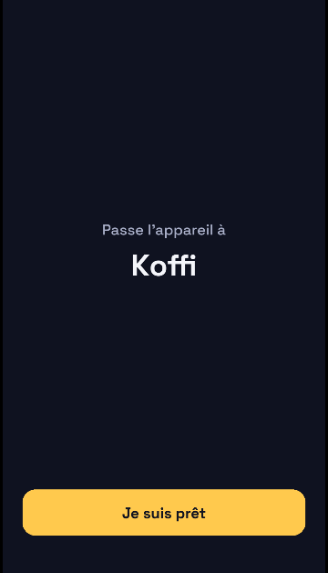
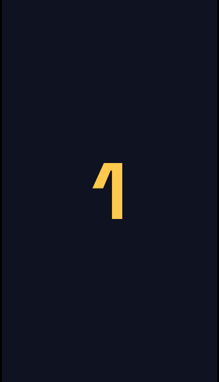
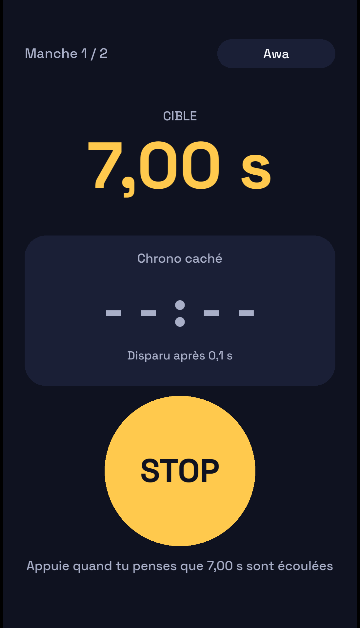
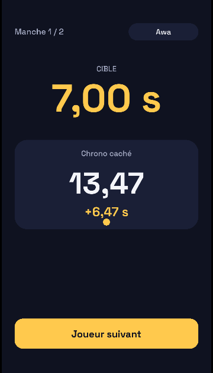
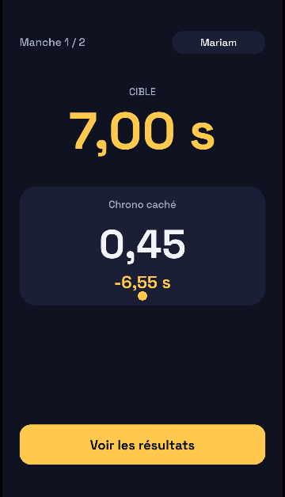
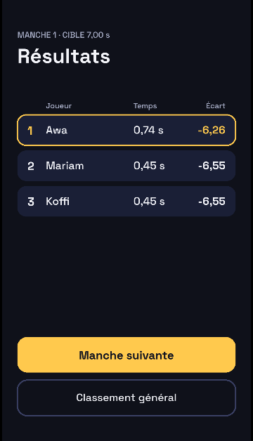
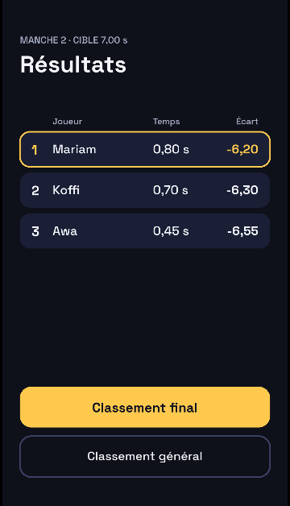
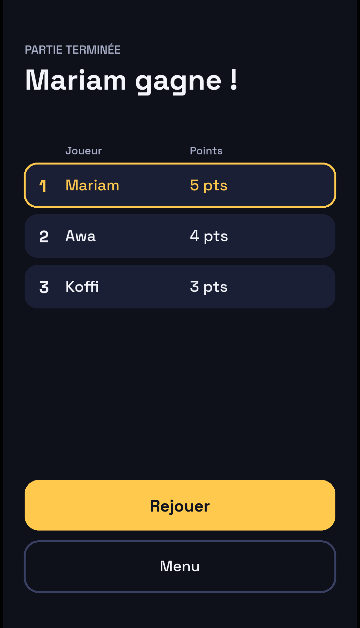

Mode d’emploi
Comment jouer à Blind Timer
Un jeu de timing pour 2 à 4 joueurs sur un seul appareil. Le chrono disparaît presque aussitôt : fie-toi à ton instinct et arrête-le au bon moment.
- 2 à 4 joueurs
- 1 seul appareil
- Chrono caché
- 1
Prépare la partie
Ajoute 2 à 4 joueurs et saisis leurs pseudos. Règle le temps cible avec − et + (7 s par défaut), choisis Local, puis appuie sur « Lancer la partie ».

- 2
Passe l’appareil
Chacun joue à son tour sur le même appareil. L’écran indique à qui le donner : passe-le, puis le joueur appuie sur « Je suis prêt ».


- 3
Le compte à rebours
Trois, deux, un… GO ! Le chrono démarre au GO, avec un bip pour chaque chiffre.

- 4
Sens le temps passer
Le temps cible s’affiche en haut, mais le chrono disparaît presque tout de suite. Appuie sur STOP (ou sur la barre Espace au clavier) quand tu penses que ce temps est écoulé. Un seul essai par manche.

- 5
Découvre ton écart
Ton temps réel et ton écart avec la cible apparaissent. Un signe + veut dire trop tard, un signe − trop tôt : plus c’est proche de zéro, mieux c’est. Appuie sur « Joueur suivant » ou, pour le dernier joueur, sur « Voir les résultats ».


- 6
Les résultats de la manche
Les joueurs sont classés du plus petit écart au plus grand, et le meilleur passe en jaune. Continue avec « Manche suivante », ou consulte les points cumulés avec « Classement général ».


- 7
Le classement final
Après la dernière manche, le joueur qui a cumulé le plus de points gagne la partie. « Rejouer » relance tout de suite, « Menu » ramène à l’accueil.

Comment sont comptés les points
- 1er3 pts
- 2e2 pts
- 3e1 pt
- 4e0 pt
Conseils
- Compte dans ta tête à ton rythme : inutile de chercher le chrono, il est déjà parti.
- Plus la cible est longue, plus l’écart peut grossir : commence par 5 ou 7 secondes.
- Joue plusieurs manches : le sens du temps s’affine vite.